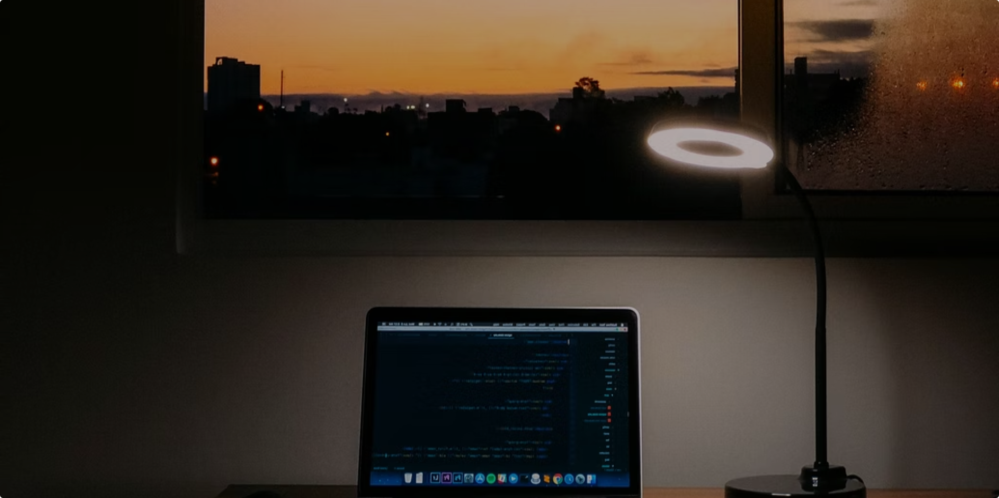

My Journey as a Front-End Developer Student
Being a front-end developer has been an exhilarating journey for me, filled with challenges, growth, and the joy of seeing my creations come to life on the web. As a student, I embarked on this path with a passion for design and a fascination with the interplay of technology and user experience. Little did I know that this would become the foundation for a rewarding career in the world of web development.
In the beginning, I dove headfirst into learning the fundamental languages of the web - HTML, CSS, and JavaScript. The concepts seemed overwhelming at first, but with determination and consistent practice, I began to grasp the intricacies of each language. I remember the thrill of creating my first webpage, watching as the elements I had meticulously crafted came together to form a functional and visually pleasing interface. As I progressed in my studies, I realized that front-end development was more than just writing code; it was about understanding the end user and crafting intuitive experiences. I delved into the realm of user interface design, honing my skills in creating layouts, selecting colors, and optimizing the user flow. The blend of creativity and technical expertise required in this field was invigorating, and I found myself constantly seeking inspiration from other designers and developers. One of the most transformative moments in my journey was when I started working on real-world projects. Collaborating with teammates, I discovered the importance of effective communication and teamwork. I learned how to break down complex problems, brainstorm solutions, and integrate my code seamlessly with the work of others. The satisfaction of seeing our collective effort come to fruition was immensely rewarding, and it solidified my passion for front-end development. Throughout my journey, I also embraced the ever-evolving nature of the field. I stayed updated with the latest trends, frameworks, and tools, attending workshops, participating in online communities, and taking part in hackathons. Embracing continuous learning became second nature to me, as I realized that growth in this field requires a willingness to adapt and evolve alongside the rapidly changing technology landscape. As I reflect on my journey as a front-end developer student, I can't help but feel immense gratitude for the experiences and opportunities that have shaped me into the professional I am today. The challenges I faced and the knowledge I gained have not only equipped me with technical skills but also instilled in me a deep sense of perseverance and a passion for creating meaningful digital experiences. I look forward to the road ahead, where I can continue to learn, innovate, and make a positive impact through my work as a front-end developer.
Blog One
In the beginning, I dove headfirst into learning the fundamental languages of the web - HTML, CSS, and JavaScript. The concepts seemed overwhelming at first, but with determination and consistent practice, I began to grasp the intricacies of each language.
Blog Two
In the beginning, I dove headfirst into learning the fundamental languages of the web - HTML, CSS, and JavaScript. The concepts seemed overwhelming at first, but with determination and consistent practice, I began to grasp the intricacies of each language.
Blog Three
In the beginning, I dove headfirst into learning the fundamental languages of the web - HTML, CSS, and JavaScript. The concepts seemed overwhelming at first, but with determination and consistent practice, I began to grasp the intricacies of each language.
Blog four
In the beginning, I dove headfirst into learning the fundamental languages of the web - HTML, CSS, and JavaScript. The concepts seemed overwhelming at first, but with determination and consistent practice, I began to grasp the intricacies of each language.
Blog five
In the beginning, I dove headfirst into learning the fundamental languages of the web - HTML, CSS, and JavaScript. The concepts seemed overwhelming at first, but with determination and consistent practice, I began to grasp the intricacies of each language.
Blog six
In the beginning, I dove headfirst into learning the fundamental languages of the web - HTML, CSS, and JavaScript. The concepts seemed overwhelming at first, but with determination and consistent practice, I began to grasp the intricacies of each language.